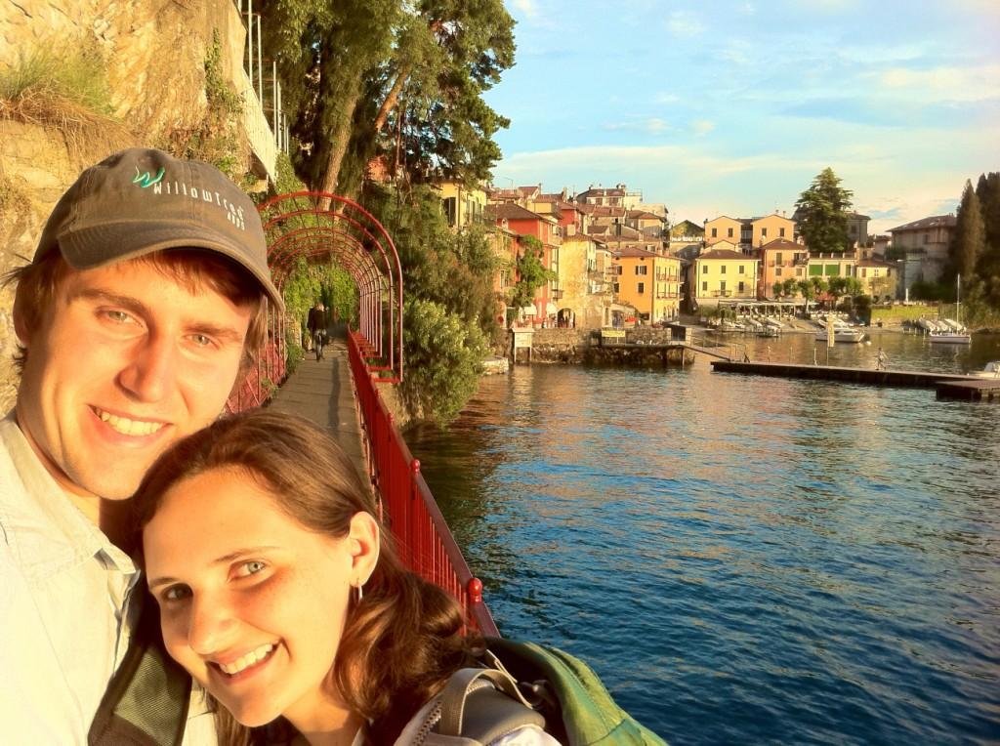
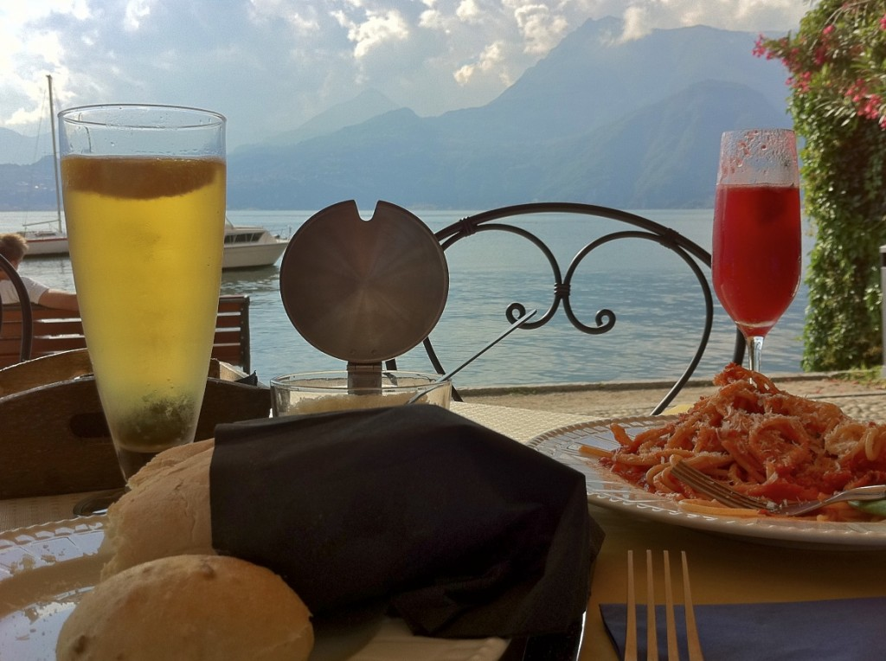
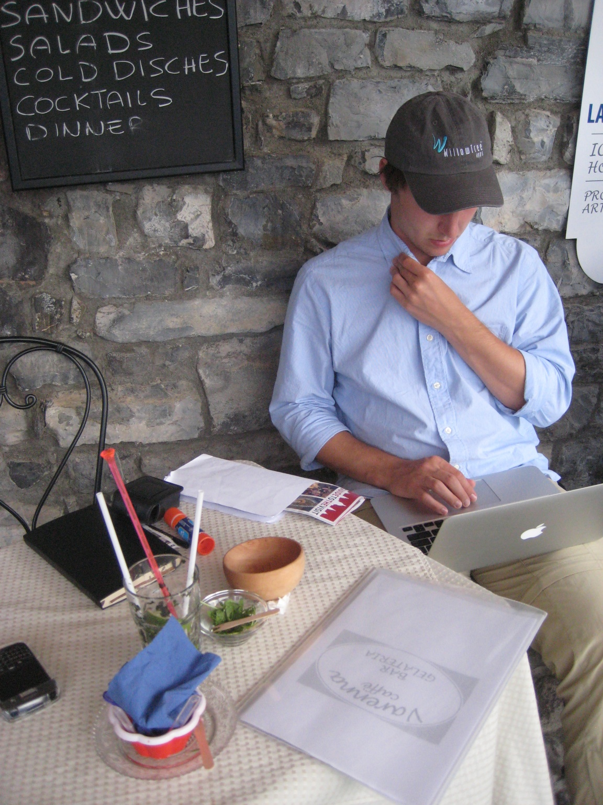

Varenna… probably the most beautiful place I have ever been.
Taking the train from Milan you wind through little villages and up and down hills before you first catch a glimpse of the sparkling lake. Lake Como is set high among the mountains where the Alps first trespass into Italy. Home to many magnificent villas and castles, it has several towns scattered on its banks. The most famous is Bellagio, the “pearl of the lake” and the inspiration for the hotel in Las Vegas, but we spent our four glorious days in Varenna, a sleepy fishing village boasting a population of 800.

The town of Varenna. You can’t even repaint your house without permission to make sure the town remains as picturesque as it appears here.
After the hustling and bustling of Rome, Florence, and Venice, it was so nice to have a few days to relax, catch up on laundry, and actually read a book! A beautiful winding promenade passed by huge hydrangea bushes and wildflowers before dropping us into town.

“Our spot” became one of the outdoor tables outside Varenna Cafe, a small restaurant serving the most amazing toasted sandwiches, parfaits, and gelato. And the best part? It had wifi! Every morning we would walk over from our hotel, laptop in tow, to download our emails and catch up on my journal while enjoying their amazing breakfasts. With an amazing view across the lake, it wasn’t a bad way to start the day.

The view from Varenna Cafe before lunch on our very first day.

Taking a break from journaling to look up the ferry schedule…

…and Evan uploading pictures after lunch
One day we took the morning ferry to Bellagio to explore the famous town and its villas. It was much larger than Varenna and filled its promenade with upscale jewelry stores and designer boutiques. We had fun window shopping beneath the massive curtains hung outside to protect the customers from the wind until we came upon the most beautiful glass set. Italy is famous for its glass-makers, from the popular Murano glass workshops to the small villages that export their products around the world. Though the picture hardly does the set justice, the intricacy of the glass design was amazingly beautiful.

The perfect zibibo service made a few hours from Como… the grapes are Murano glass from Venice
The following entirely serious and not silly at all dialogue ensued…

Ooooooooo… it’s pretty AND shiny
Insert price of “much too expensive for you”

I’ll never be happy again…
And then Evan mistakenly commented that he too liked the set, and it didn’t seem too ridiculous…

Oh you like it do you? How about you get it and I borrow it?
But Evan didn’t like that idea… for some reason

I presented a rational and calm argument in favor of the glass

Before realizing that it wasn’t that important and calmly agreeing that it didn’t make sense to haul around 15 pounds of highly fragile glass for the next 3 weeks…
And so we bought 15 pounds of wood…
For the rest of the afternoon in Bellagio we visited Villa Melzi and its beautiful grounds.

Inspiration for my next grand estate… any day now

The view of Lake Como with the edge of the villa in the distance

The balcony of the summer gazebo
As we strolled back into town we stopped at the benches to read, which inevitably turned into a nap. With a cool breeze and a warm sun, it was pretty enjoyable.

Hannah enjoying the view

On the ferry home
The next day I took my sketchbook to explore the villas in Varenna while Evan rented a kayak across the lake. We met for lunch and spent the afternoon sitting on our room’s balcony overlooking the lake and finishing our books as the sun slowly set.  We never wanted to leave.
We never wanted to leave.